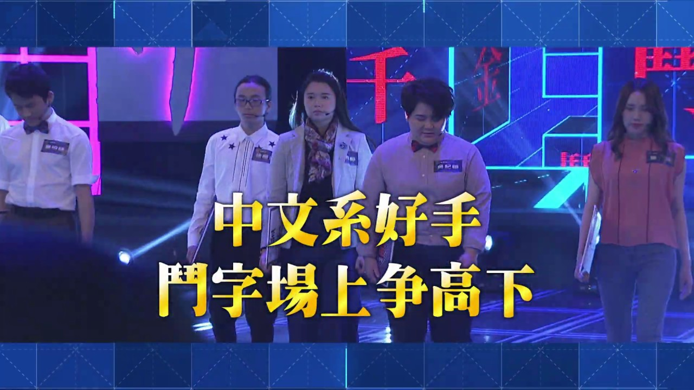

（大坦誠，2022/8/12臉書貼文）
不用擔心理組會戰文組，因為文組自己就會互戰了。
如果你被問到煩，你就說你以後要自己開補習班，這樣大家就會不知道要接什麼然後閉嘴了。
廢青，覺青，憤青，文青。「躲避廢青，附和覺青，遠離憤青，已讀文青」是不二法門。
躲避廢青可以不用跟著他在半夜穿著古著去自我毀滅還有喝酒；
躲避廢青可以不用跟著他在半夜穿著古著去自我毀滅還有喝酒；
附和覺青可以避免對方三不五時傳一大堆訊息要你認同他的觀點；
遠離憤青可以少去他們毫無邏輯的道德勒索；
已讀文青可以不用看他們寫的詩和小說和散文還要給予不傷人卻必須要真誠的讀後心得。
3.系上一定會出現一個大喊「我不要中文系我高分低就！我高分低就！」的人這時候請直接回他一句「那你去準備轉學考啊」，對方如果上進的話，這就是在鼓勵他，對方如果只是無病呻吟，這就是讓他閉嘴的好方法。
4. 中文系同學的情勒文字篇幅都非常的長，沒關係，你就放著，當成他在連載小說。
5. 開學不久後你會發現中文系不是簡單的閱讀以及寫作，而是文字學、文學史、聲韻學、句讀，還有巴拉巴拉巴拉巴拉的一些讓你不能睡覺的小考驗。
6. 如果你是長得不帥又沒魅力的中文系男生，其他男性友人對你大喊「你一定是妹頭吧！」的時候，你會覺得很煩。
7. 如果妳是女校而且妳超喜歡女校氛圍，恭喜妳！女校again。
8. 你會看到有很多同學寫的詩很差還一直寫一直寫，但不要說出來，這樣對大家都好。
9. 說不定你的詩也寫得很差，但是大家沒說出來，大家這樣是為你好。
10.中文系的人大多都很會筆戰，而且有一堆超容易被踩又很莫名其妙的地雷，所以你的貼文下可能會隨時出現大把大把的申論題。當對方在你的留言區打出「(?」的時候代表「他已經想戰你了，他正在抓你的語病」，當對方打出「觀點」「看法」「意識」的時候，代表「他已經想戰你了，他正在抓你語病，而且沒戰贏不會走」。這時候你就貼一張貓貓的圖片說「我要去撸貓了」就可以逃離戰場，因為中文系大多都是愛貓人設（不知道為什麼。）
11.開學後你會發現原來大家的文筆都很好，你再也不是課堂上被老師讀出作品的那個人，然後大受打擊。（而且教授還會bang你說你的散文像會考作文）
12.開學一陣子後你會發現文學獎很難得獎，完全不像校刊徵文或國語文競賽一樣容易達標，但就是有一些同學能輕輕鬆鬆得到各樣文學獎，所以你會更受打擊。
13.如果你的文筆也很差的話，也不用氣餒，因為如果你一直繼續寫下去，你的文章就會在某些時刻成為你的救贖。
14.讀中文系仍然會整天打錯字（像我），但也可以不用為了顯示自己是中文系狂挑人錯字，因為沒人在乎，真的。
15.中文系學到的東西很抽象，但很有用。你輕鬆寫完一大篇動人的廢課心得的時候；你臨時要上臺致詞或是要寫文案的時候；你要傳訊息說服別人的時候；你要假裝在乎別人所以要很快速打一篇感性文的時候，還有你變成哪個網頁的文案小編的時候，你在中文系學到的能力、就會讓你忽然領先一大群人。
16.無論你愛不愛吵，中文系畢業後你必定練就吵架和打筆戰的能力。
身為中文系裡面的非文青，真的會不知道中文系的文青同學們到底在想什麼，中文系有一群人整天說要看海結果看海又怕熱，或是打一大篇文章你認真看完發現他在自艾自憐或無病呻吟，再或者整天大喊「我要改變世界」然後沒做半點有用的事，再不然就是用自己不上不下的文筆成天在dcard發文上熱門、再沾沾自喜。（這樣是不是罵到我自己了^^?）
18.除了不知道同學在幹嘛，有時候你也會不知道自己要幹嘛。中文系畢業後，沒有什麼明確的標竿可以完全對應我們所學，但就是因為沒有明確的標竿，我們才能恣意的往各樣道路去奔跑，因為每個職業都會需要用到文字。所以畢業後、你會看到自己的中文系同學們在各個地方頑強生長、努力綻放。（反正最爛的下場，不過是跟我一樣當過氣網紅三流作家，不是嗎？）（還是這樣就夠爛了？）
19.話題回到「我不知道中文系同學在幹嘛」這件事。現在我仍然不確定我們到底在幹嘛。
但我知道，中文系的同學會在別人生日的時候用各種感官摹寫讚美人；
中文系的同學會在你覺得自己很糟的時候，寫一篇論點、論據、論證充足的議論文，只為了說服你再相信自己一次。
中文系的同學還能用紀傳體（以人物為主軸）、編年體（以時間為主軸）、紀事本末體（以事件為主軸）的方式和你談論當年誰誰誰的八卦，每次聊一樣的事都有不同的樂趣。還有些中文系的同學會突然寄一張很感人的明信片給你。
總而言之，讀中文系可以讓你變成能聽故事的人和能說故事的人。因此，對我來說，讀中文系是一件很幸福的事。
（而且不用再算數學了媽的）